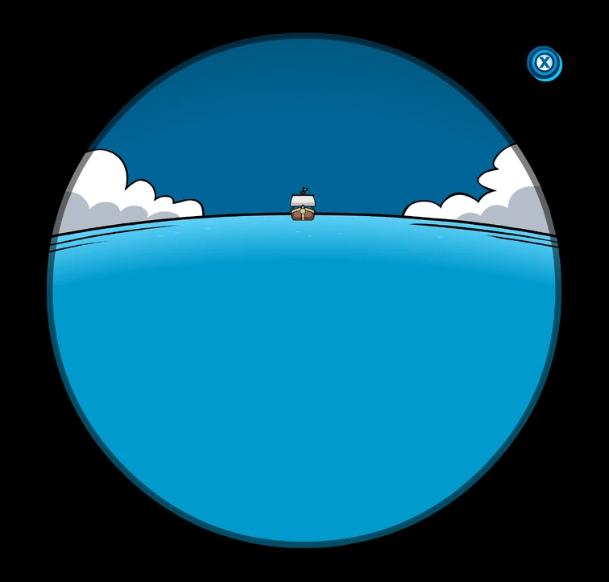

Pinguinando
Personagens
Capitão Rockhopper
Um pirata amigável e um marinheiro que navega regularmente até a ilha de Club Penguin com seu barco, Migrator, Rockhopper está sempre acompanhado de seu puffle vermelho, Yarr. É possível encontrar o diário das aventuras do capitão na biblieoteca do jogo. Sempre que ele chega na ilha, leva consigo um item grátis para os jogadores e um catálogo de Itens Raros do Rockhopper.
Você Sabia?
A partir do momento que seu barco é avistado pelo telescópio do farol, Rockhopper ancora o Migrator na praia. Durante esse período, apesar de ser algo difícil, é possível encontrá-lo pela ilha. Caso você o encontre, é possível adicioná-lo como amigo e conquistar o selo Rockhopper por encontrá-lo
